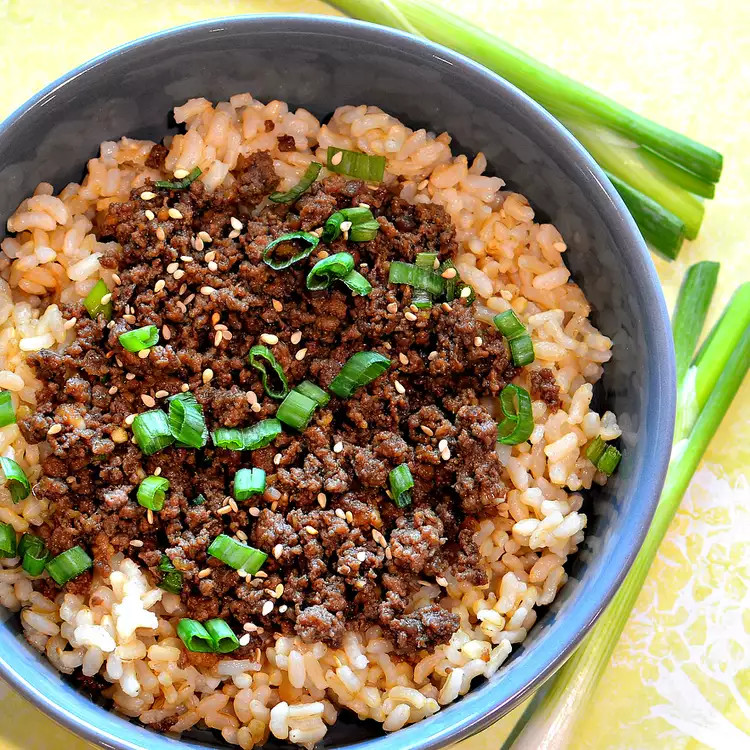

Korean Beef Bowl

About the Recipe
This Korean beef bowl is a quick and easy meal with ground beef as the star of the show. Seasoned with ginger, garlic, soy, sesame seeds, and crushed red pepper, this dish is full of flavor. Serve over warm rice.
Ingredients
- 1 pound lean ground beef
- 5 cloves garlic, crushed
- 1 tablespoon freshly grated ginger
- 2 teaspoons toasted sesame oil
- 1/2 cup reduced-sodium soy sauce
- 1/3 cup light brown sugar
- 1/4 teaspoon crushed red pepper
- 6 green onions, chopped, divided
- 1 tablespoon toasted sesame seeds
Steps
- Heat a large skillet over medium-high heat. Add beef and book, stirring and crumbling into small pieces until browned, 5 to 7 minutes. Drain excess grease.
- Stir in garlic, ginger, and sesame oil and cook until fragrant, about 2 minutes. Stir in soy sauce, brown sugar, and red pepper. Cook until beef absorbs some sauce, about 7 minutes. Add 1/2 of chopped green onions.
- Serve over hot cooked rice; granish with sesame seeds and remaining green onions.